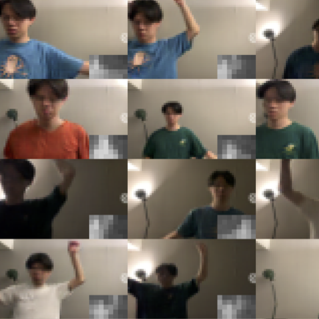

| About | Publication | Project | Personal |
|

|
WACV Workshops, 2023 video A GAN-based image synthesis model with low-res thermal heatmap conditioning using the proposed SPADE-SR (Self-Resampling) network. (thesis work) |


|
Sheng-Ya Chiu, ECICE, 2021 We train a pose classification network based on low-res thermal heatmaps to signal automatic doors for opening. An auxiliary task (segmentation) is added to boost performances. |


|
Wenpei Zheng, ASAP, 2019 media coverage 1 2 The paper presents our 2nd prize-winning project at 2018 The 4th China Mobile Internet Innovation Contest. Based on personal information and real-time speed, heart rate, and terrain data, our system guides the runner with appropriate paces to maintain a safe cardio load. |


|
ICSSE, 2018 A bed-exit detection network based on thermopile array sensor. |
List design from Jon Barron